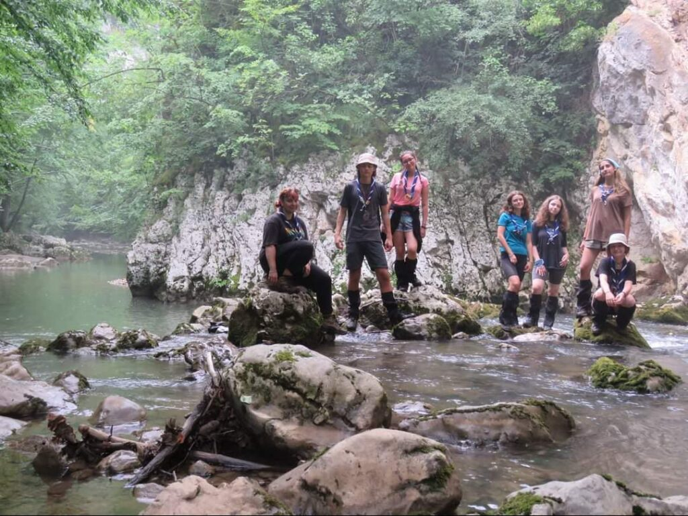
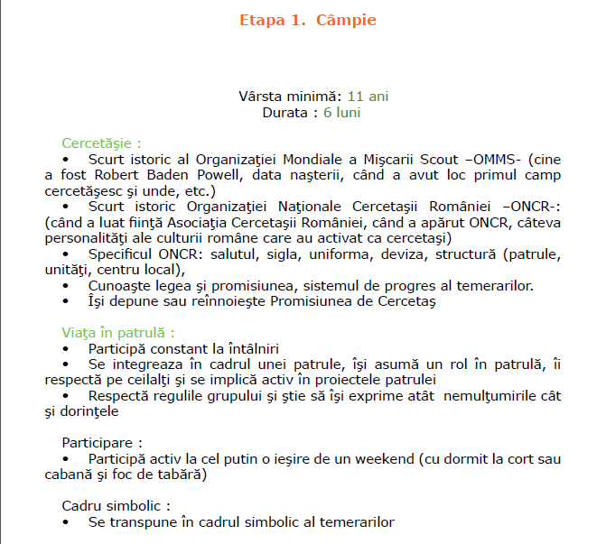
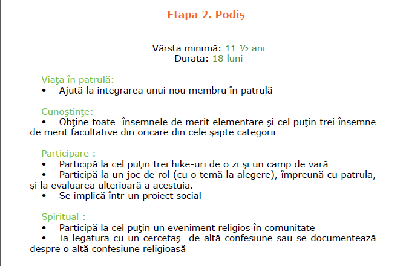
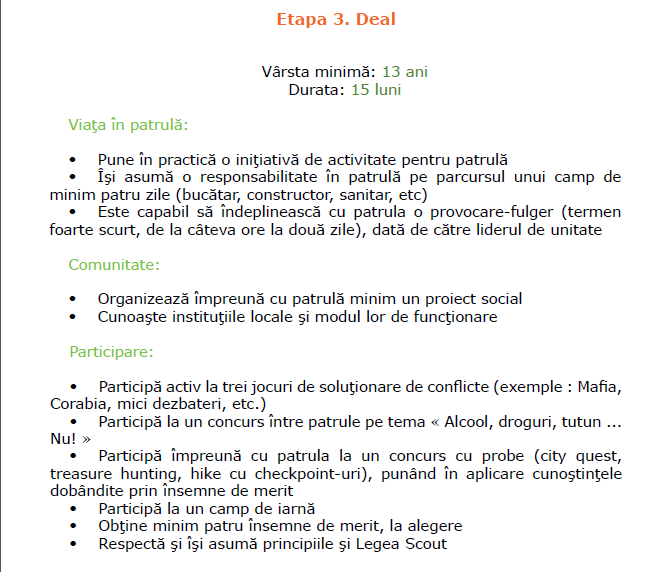
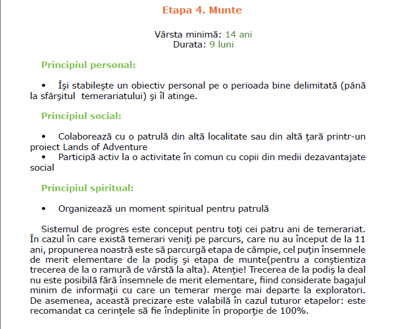
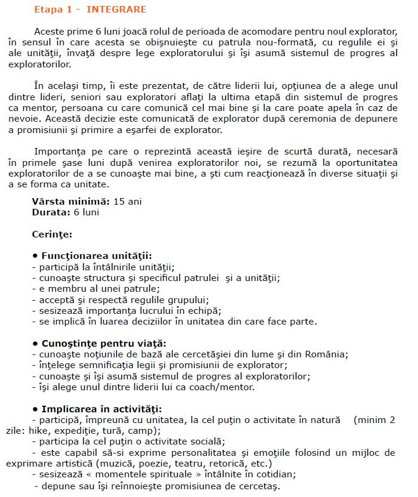
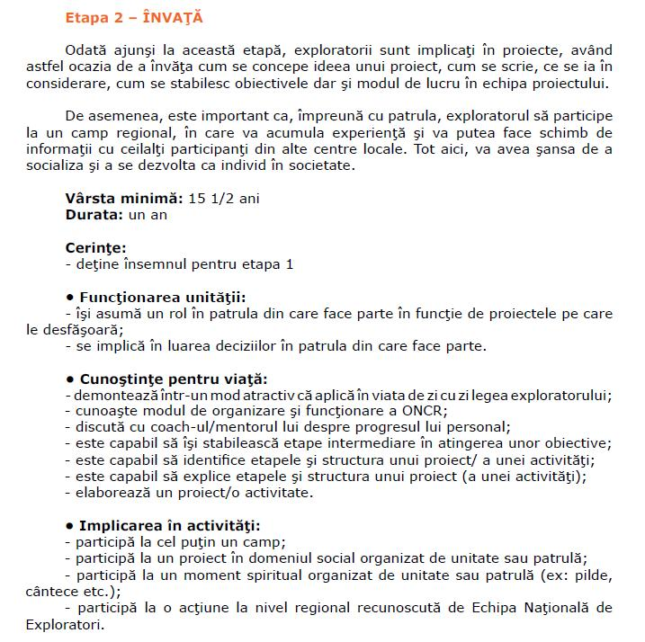
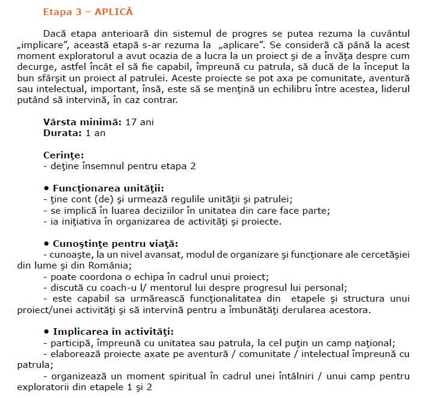
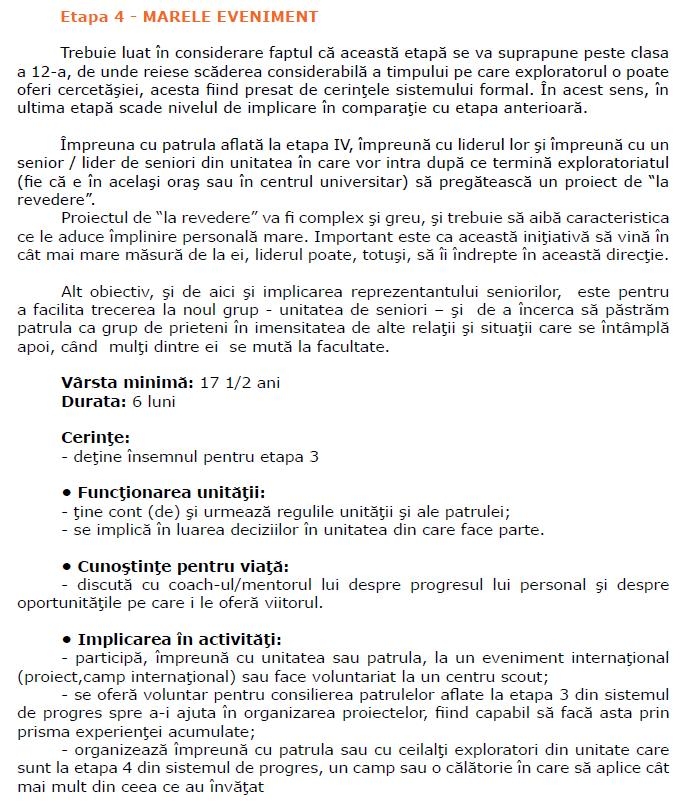
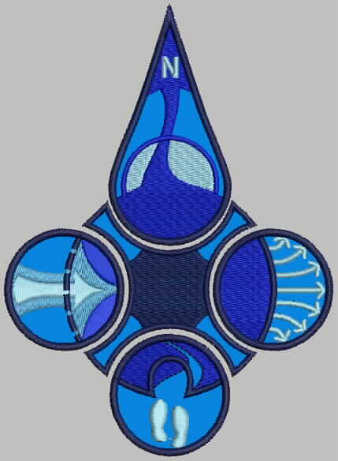

Programul: sâmbăta + natura
Membri: minori (7–18 ani), majori (18–24 ani), voluntari adulți (18+). Înscrieri recomandate 1 sept – 1 dec; promisiunea se depune primăvara (min. 5 luni vechime, o singură ceremonie/an). Transferuri, reactivări și voluntari — oricând.

🐺 Lupișori
Camp de vară min. 4 zile (din min. 15 zile/an în natură); ieșiri de 1–2 zile. Momentan fără patrule active — întreabă-ne de reluare.
🏕️ Temerari
Camp min. 5 zile (din min. 20 zile/an); ieșiri 1–4 zile. O unitate cu două patrule active.
Sistemul de progres: Câmpie → Munte
CÂMPIE → PODIȘ → DEAL → MUNTE. Fiecare etapă înseamnă autonomie mai mare: de la viața în patrulă la trasee și campuri conduse tot mai mult de copii.




🏰 eXploratori — unitatea fondatoare
Camp min. 7 zile (din min. 25 zile/an); ieșiri 1–4 zile. Unitatea ARA, două patrule.
Sistemul de progres: Etapele I–IV
Etapa I → II → III → IV: de la integrare în patrulă la proiecte proprii și mentorat pentru cei mici.





Însemne de merit
Spre deosebire de însemnele obținute prin sistemul de progres, însemnele de merit recompensează reușitele individuale, la alegere, pe standarde personalizate pentru fiecare explorator — orientare, prim-ajutor, meșteșuguri, ecologie și altele.
🧭 Seniori — a doua ca vechime
Camp min. 7 zile (din min. 25 zile/an); ieșiri 1–4 zile. Grup activ, proiecte și mentorat.
🎓 Lideri
Adulți cercetași cu formare specifică. Șeful de unitate coordonează programul anual și evaluează progresul.
🤝 Voluntari adulți
Cercetași sau simpatizanți 18+ care ajută la campuri și activități extraordinare. Implică-te →
Metoda Scout — 7 elemente
Distracție cu un scop: copilul e artizanul propriei educații. Independență, conducere, autodeterminare, cod pozitiv de conduită.
Codul nostru de onoare. Citește legea →
Facem, nu doar ascultăm: noduri, foc, traseu, buget de patrulă.
Echipe mici, 6–8 membri, cu lider ales și roluri rotative.
Fiecare crește în ritmul lui, cu insigne și etape clare.
Junglă, Ținut, Cetate, Călătorie — povești care dau sens.
Sala noastră de clasă preferată. Leave no trace.
Lideri formați care ghidează, nu comandă.
Oferta educațională
🏫 Școala Altfel
Ateliere pentru clase: orientare cu harta, ecologie, lucru în echipă, istorie locală. Program de 2–4 ore sau zi întreagă, în București sau în natură.
🤝 Team building
Pentru companii și ONG-uri: treasure-hunt urban, trasee, foc de tabără, leadership prin joc. Facilitat de lideri cu experiență.